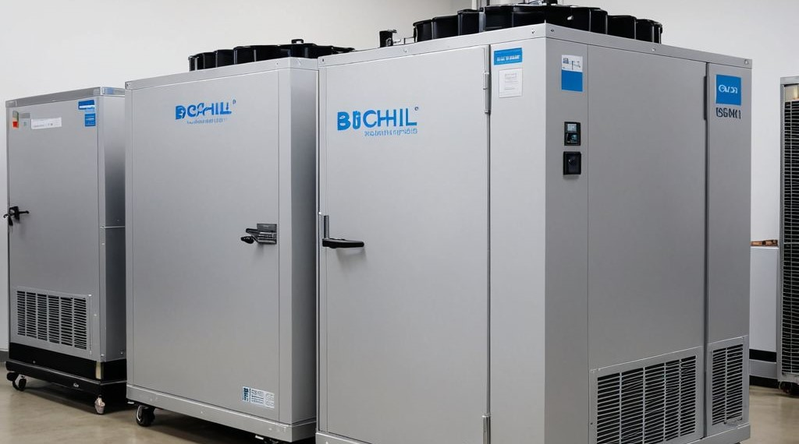

Preserving Life. Protecting Science.
BioChill Technologies guarantees the highest standard of cold storage for your most sensitive materials. We understand that life-saving products deserve absolute reliability. Our promise is to protect, preserve, and deliver uncompromised quality. Your trust is our ultimate commitment.
We provide:
- Advanced cold storage units for laboratories and hospitals
- Cryogenic ice buckets for transporting biological samples
- Cooling solutions for medical devices and pharmaceuticals
CryoChill Series (Advanced Cold Storage Units)
A range of cold storage units equipped with cryogenic technologies capable of maintaining temperatures between -80°C and -196°C.
- Digital temperature control and monitoring
- Bluetooth and IoT connectivity for remote temperature monitoring
- Built-in power failure backup systems
CryoTransport Pods

Specialized insulated containers designed for the safe transport of biological specimens, vaccines, and other sensitive medical materials.
- Portable and lightweight design
- Real-time GPS tracking and temperature monitoring
- FDA-approved and compliant with international transport regulations (IATA).
MedIce Storage Solutions (Clinical Cold Storage)

These units are ideal for storing blood, plasma, and other medical samples that require specific temperature conditions.
- Temperature ranges from -20°C to -80°C
- Easy integration with hospital data systems
- Multi-chamber storage options to segregate different materials